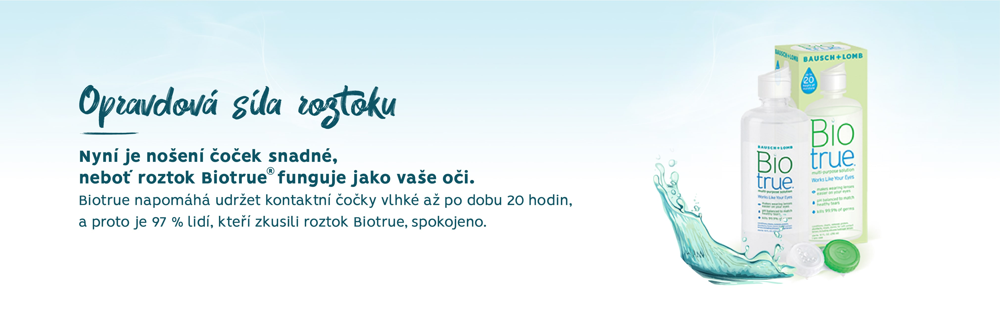
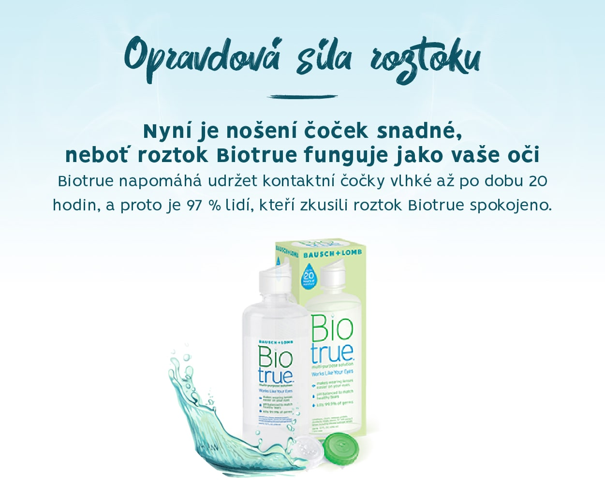

<!DOCTYPE html>
<html lang="en">
<head>
  <meta charset="UTF-8">
  <meta http-equiv="X-UA-Compatible" content="IE=edge">
  <meta name="viewport" content="width=device-width, initial-scale=1.0">
  <title>Biotrue® - roztok</title>
  <link rel="stylesheet" href="styles.css">
  <link rel="icon" type="image/png" href="assets/favicon_16x16px.png"/>
  <script id="Cookiebot" src="https://consent.cookiebot.com/uc.js" data-cbid="6d2145b4-b50c-43b6-a989-01cfd087ab9e" data-blockingmode="auto" type="text/javascript"></script>
</head>
<body>
  <header class="navigation-header">
    <div class="navigation-elements">
      <a href="/" class="bl-logo"></a>
      <div class="navigation">
        <div class="navigation__item">
          <a href="/#produkty">Produkty</a>
        </div>
        <div class="navigation__item">
          <a href="#vyskusat-zdarma">Vyskúšať zdarma</a>
        </div>
        <div class="navigation__item navigation__item--bubble">
          <a href="http://www.cockybausch.cz/" target="_blank">Nájsť očného špecialistu</a>
        </div>
        <a href="https://www.facebook.com/BauschLombCR" target="_blank" class="fb-logo">
          <svg version="1.1" id="Capa_1" xmlns="http://www.w3.org/2000/svg" xmlns:xlink="http://www.w3.org/1999/xlink" x="0px" y="0px"
            viewBox="0 0 512 512" style="enable-background:new 0 0 512 512;" xml:space="preserve">
            <style type="text/css">
              .st0{fill:#0C5465;}
              .st1{fill:#FFFFFF;}
            </style>
            <circle class="st0" cx="256" cy="256" r="256.1"/>
            <path class="st1" d="M220.8,275.3c-16,0-31.3,0-47,0c0-19.6,0-38.7,0-58.3c15.6,0,30.9,0,47,0c0-3.6,0-6.7,0-9.7
              c0.2-17.7-1.2-35.5,3.3-52.9c7-27.3,22.2-47.2,50.9-54.1c5.3-1.3,10.9-1.7,16.4-1.8c15.5-0.3,30.9-0.1,46.9-0.1
              c0,19.4,0,38.3,0,58.2c-5.5,0-10.9-0.2-16.4,0c-6,0.2-12.2,0.2-18.2,1.3c-13.3,2.5-22.1,11.7-23.6,25.2c-1.1,9.9-0.8,19.9-1.2,29.9
              c-0.2,4.1,2.3,4.2,5.4,4.2c15.5-0.1,31,0,46.5,0c2,0,4,0,7.1,0c-1.3,7.6-2.6,14.6-4,21.5c-2.1,10.6-4.5,21.2-6.4,31.9
              c-0.6,3.8-2.3,4.8-5.9,4.7c-12-0.2-24,0.2-36-0.2c-5.3-0.2-6.9,1.4-6.9,6.8c0.2,42.6,0.1,85.4,0.1,128c0,7.6,0,7.6-7.6,7.6
              c-14.2,0-28.4,0-42.6,0c-7.9,0-7.9,0-7.9-7.6c0-42.3,0-84.6,0-126.9C220.8,280.7,220.8,278.6,220.8,275.3z"/>
          </svg>
        </a>
      </div>
      <div class="navigation navigation-mobile">
        <div class="hamburger" id="hamburger">
          <div class="bar1"></div>
          <div class="bar2"></div>
          <div class="bar3"></div>
        </div>
      </div>
    </div>
  </header>
  <div class="navigation-mobile-items" id="mobile-nav">
    <div class="navigation__item">
      <a href="/#produkty">Produkty</a>
    </div>
    <div class="navigation__item">
      <a href="#vyskusat-zdarma">Vyskúšať zdarma</a>
    </div>
    <div class="navigation__item navigation__item--bubble">
      <a href="http://www.cockybausch.cz/" target="_blank">Nájsť očného špecialistu</a>
    </div>
    <a href="https://www.facebook.com/BauschLombCR" target="_blank" class="fb-logo">
      <svg version="1.1" id="Capa_1" xmlns="http://www.w3.org/2000/svg" xmlns:xlink="http://www.w3.org/1999/xlink" x="0px" y="0px"
        viewBox="0 0 512 512" style="enable-background:new 0 0 512 512;" xml:space="preserve">
        <style type="text/css">
          .st0{fill:#0C5465;}
          .st1{fill:#FFFFFF;}
        </style>
        <circle class="st0" cx="256" cy="256" r="256.1"/>
        <path class="st1" d="M220.8,275.3c-16,0-31.3,0-47,0c0-19.6,0-38.7,0-58.3c15.6,0,30.9,0,47,0c0-3.6,0-6.7,0-9.7
          c0.2-17.7-1.2-35.5,3.3-52.9c7-27.3,22.2-47.2,50.9-54.1c5.3-1.3,10.9-1.7,16.4-1.8c15.5-0.3,30.9-0.1,46.9-0.1
          c0,19.4,0,38.3,0,58.2c-5.5,0-10.9-0.2-16.4,0c-6,0.2-12.2,0.2-18.2,1.3c-13.3,2.5-22.1,11.7-23.6,25.2c-1.1,9.9-0.8,19.9-1.2,29.9
          c-0.2,4.1,2.3,4.2,5.4,4.2c15.5-0.1,31,0,46.5,0c2,0,4,0,7.1,0c-1.3,7.6-2.6,14.6-4,21.5c-2.1,10.6-4.5,21.2-6.4,31.9
          c-0.6,3.8-2.3,4.8-5.9,4.7c-12-0.2-24,0.2-36-0.2c-5.3-0.2-6.9,1.4-6.9,6.8c0.2,42.6,0.1,85.4,0.1,128c0,7.6,0,7.6-7.6,7.6
          c-14.2,0-28.4,0-42.6,0c-7.9,0-7.9,0-7.9-7.6c0-42.3,0-84.6,0-126.9C220.8,280.7,220.8,278.6,220.8,275.3z"/>
      </svg>
    </a>
  </div>
  <div class="content">
    <div class="banner">
      
      
      <p class="product-guide product-guide--roztok">Zdravotnícka pomôcka. Pozorne si prečítajte návod na použitie.</p>
    </div>
    <div class="green-banner green-banner--text-only">
      <div class="green-banner-text">
        <h3>Roztok pro kontaktní čočky, který představuje pokrok v péči o čočky.<br>
          Biotrue<sup>®</sup>je inspirován fyziologií vašich očí.</h3>
        <p class="longer">
          Vyzkoušejte ještě dnes víceúčelový roztok Biotrue<sup>®</sup> - a zažijte pokročilou péči o kontaktní čočky inspirovanou
          fyziologií vašich očí. Na základě zkoumání, jak oko přirozeně funguje, aby zůstalo jasné, hydratované
          a zdravé, společnost Bausch + Lomb vyvinula inovativní roztok s cílem zabezpečit vynikající péči o čočky.
          Biotrue<sup>®</sup> pečuje, čistí, odstraňuje proteiny, dezinfikuje, oplachuje a uchovává měkké kontaktní čočky včetně
          silikonhydrogelových kontaktních čoček.
        </p>
      </div>
    </div>
    <section class="benefit-cards">
      <div class="benefit-card benefit-card--long-descr">
        <div class="benefit-icon">
          
        </div>
        <h3>Poskytuje nepřekonatelnou<br>
          účinnost dezinfekce</h3>
        <p>Biotrue<sup>®</sup> v sobě spojuje jedinečné
          inovace inspirované fyziologií
          vašich očí v kombinaci s duálním
          systémem dezinfekce.</p>
      </div>
      <div class="benefit-card benefit-card--long-descr">
        <div class="benefit-icon">
          
        </div>
        <h3>Jeho pH je stejné jako pH<br>
          zdravých slz (bioinspirace)</h3>
        <p>Biotrue<sup>®</sup> pomáhá zachovat přirozený stav oka.</p>
      </div>
      <div class="benefit-card benefit-card--long-descr">
        <div class="benefit-icon">
          
        </div>
        <h3>Používá lubrikant, který<br>
          se přirozeně vyskytuje v očích<br>
          (bioinspirace)</h3>
        <p>Biotrue<sup>®</sup> používá přirozený
          lubrikant vašich očí a pomáhá
          zachovat čočky přirozeně vlhké
          a komfortní během celého dne.</p>
      </div>
      <div class="benefit-card benefit-card--long-descr">
        <div class="benefit-icon">
          
        </div>
        <h3>Zachovává aktivitu některých<br>
          prospěšných proteinů, které<br>
          jsou přítomné v slzách<br>
          (bioinspirace)</h3>
        <p>Biotrue<sup>®</sup> pomáhá zachovat
          proteiny, které se vyskytují
          ve zdravých slzách.</p>
      </div>
    </section>
    <div class="section-separator section-separator--green"></div>
<!--     <section class="guarantee">
      <div class="guarantee-image"></div>
      <div class="guarantee-text">
        <h3>Garance 100% spokojenosti!</h3>
        <p>Jsme si natolik jisti kvalitou našeho roztoku Biotrue<sup>®</sup>,
          že vám nabízíme 100% garanci vrácení peněz za tento
          výrobek, pokud s ním nebudete spokojeni.</p>
      </div>
    </section> -->
    <section class="video-section">
      <div class="video-section-text video-section-text-60">
        <h3>Co je bioinspirace?</h3>
        <p>
          Bioinspirace je nová oblast vědy, která zkoumá design nacházející se v přírodě pro návrh přelomových technologií a produktů.
        </p>
        <h3>Proč je to důležité?</h3>
        <p>
          Tato oblast přinesla řadu zajímavých nápadů a převratných
          věcí pro každodenní užívání a vylepšení komfortu našich životů.
          Bioinspirovaný produkt je takový, jehož princip fungování
          je založen na systému, který se vyskytuje v přírodě. Využití
          systému fungování už ale může mít odlišný účel než v přírodě
        </p>
      </div>
      <div class="video-section-video video-section-video-40">
        <div class="videoWrapper">
          <iframe
            src="https://www.youtube.com/embed/vSPy8S2oCQ0"
            title="YouTube video player"
            frameborder="0"
            allow="accelerometer; autoplay; clipboard-write; ecrypted-media; gyroscope; picture-in-picture"
            allowfullscreen></iframe>
        </div>
      </div>
    </section>
    <section class="benefit-cards benefit-cards--with-header">
      <h2>Biotrue<sup>®</sup> je inspirován fyziologií očí a využívá<br>
        hned tří inspiraci:</h2>
      <div>
        <div class="benefit-card">
          <div class="benefit-icon">
            
          </div>
          <h3>Jeho pH je stejné jako<br>
            pH zdravých slz</h3>
        </div>
        <div class="benefit-card benefit-card--long-descr">
          <div class="benefit-icon">
            
          </div>
          <h3>Používá lubrikant,<br>
            který se přirozeně vyskytuje<br>
            v očích</h3>
        </div>
        <div class="benefit-card benefit-card--long-descr">
          <div class="benefit-icon">
            
          </div>
          <h3>Zachovává aktivitu některých<br>
            prospěšných proteinů,<br>
            které jsou přítomné v slzách</h3>
        </div>
      </div>
    </section>
    <div class="green-banner green-banner--text-only">
      <div class="green-banner-text">
        <h3>Nasazení a vyjmutí měkkých kontaktních čoček</h3>
        <div class="green-banner-separator"></div>
        <p>
          Nasazení a vyjmutí vašich kontaktních čoček je snadné.
          Pouze po několika pokusech, budete přesně vědět, jak na to.
          Zde je několik tipů, které vám pomohou.
        </p>
      </div>
    </div>
    <section class="instruction-cards">
      <div class="instruction-card">
        Před manipulací
        s kontaktními čočkami
        si umyjte ruce jemným
        mýdlem a usušte
        je ručníkem, který
        nepouští vlákna.
      </div>
      <div class="instruction-card">
        Po každém vyjmutí
        kontaktních čoček
        je očistěte, opláchněte
        a vydezinfikujte.
      </div>
      <div class="instruction-card">
        Vždy vyjímejte jako
        první stejnou čočku,
        abyste zabránil/a
        záměně pravé za levou
        kontaktní čočku.
      </div>
      <div class="instruction-card">
        Nezapomínejte
        s kontaktními čočkami
        zacházet šetrně.
      </div>
    </section>
    <section class="lense-instructions">
      <div class="green-banner green-banner-instruction">
        <h3 class="mobile">Nasazení kontaktní čočky do oka</h3>
        <div class="green-banner-vlozeni-cocky"></div>
        <div class="green-banner-list">
          <h3>Nasazení kontaktní čočky do oka</h3>
          <ul>
            <li>Před nasazením můžete kontaktní čočky opláchnout víceúčelových roztokem, jako je například ReNu<sup>®</sup>
              Multiplus nebo Biotrue<sup>®</sup>.</li>
            <li>Položte jednu kontaktní čočku na koneček ukazováku ruky, kterou píšete. Ujistěte se, že kontaktní čočka
              není naruby (hrany by se měly stáčet nahoru, ne ven).</li>
            <li>Podívejte se rovně dopředu. Odtáhněte své dolní víčko prostředníkem stejné ruky.</li>
            <li>Vytáhněte horní víčko nahoru ukazovákem druhé ruky a podívejte se vzhůru.</li>
            <li>Jemně položte kontaktní čočku na spodní bělmo oka.</li>
            <li>Odtáhněte ukazovák a uvolněte oční víčko.</li>
            <li>Podívejte se dolů a zavřete na chvíli oči. Kontaktní čočka se sama vycentruje.</li>
            <li>Opakujte pro druhé oko.</li>
          </ul>
        </div>
      </div>
      <div class="green-banner green-banner-instruction green-banner-instruction-bottom-padding">
        <h3 class="mobile">Vyjmutí kontaktní čočky z oka</h3>
        <div class="green-banner-vyjmuti-cocky"></div>
        <div class="green-banner-list">
          <h3>Vyjmutí kontaktní čočky z oka</h3>
          <ul>
            <li>Těsně před vyjmutím kontaktních čoček můžete použít zvlhčující oční kapky, jako například Oční kapky Biotrue<sup>®</sup>.
              Jedna nebo dvě kapky do každého oka zvlhčí kontaktní čočky a usnadní jejich vyjmutí.</li>
            <li>Podívejte se vzhůru a odtáhněte dolní oční víčko prostředníkem ruky, kterou píšete.</li>
            <li>Položte ukazovák na dolní okraj kontaktní čočky a posuňte čočku dolů na bělmo oka.</li>
            <li>Zmáčkněte čočku zlehka mezi palcem a ukazovákem a jemně ji sejměte.</li>
            <li>Opakujte pro druhé oko.</li>
            <li>Jestliže se okraje vašich kontaktních čoček slepily, kápněte na kontaktní čočku několik kapek víceúčelového roztoku a jemně ji promněte, dokud se okraje neoddělí.</li>
          </ul>
        </div>
      </div>
    </section>
    <section class="how-to">
      <div class="how-to-header">
        <h2>Jak správně čistit kontaktní čočky</h2>
        <p>Pro důkladné očištění a dezinfekci vašich čoček víceúčelovým roztokem Biotrue™ dodržujte tento každodenní postup:</p>
      </div>
      <div class="how-to-instruction">
        <div>
          <h3>Ráno</h3>
          
          <ol>
            <li>Umyjte si ruce mýdlem a osušte je ručníkem
              nepouštějícím vlas.</li>
            <li>Vyjměte kontaktní čočky z pouzdra. Vložte
              si je do dlaně a opláchněte je čerstvým
              víceúčelovým roztokem Biotrue™.</li>
            <li>Vložte si čočku do oka.</li>
            <li>Vyprázdněte pouzdro na čočky, opláchněte
              jej čerstvým víceúčelovým roztokem Biotrue
              a otřepejte z něj přebývající roztok.</li>
            <li>Nechávejte pouzdro otevřené, aby se osušilo
              na vzduchu.</li>
          </ol>
        </div>
        <div>
          <h3>Večer</h3>
          
          <ol>
            <li>Umyjte si ruce mýdlem a osušte je ručníkem
              nepouštějícím vlas.</li>
            <li>Naplňte čisté pouzdro na čočky až po okraj
              čerstvým víceúčelovým roztokem Biotrue.</li>
            <li>Vyjměte si čočku z oka. Vložte si čočku do dlaně.
              Nakapejte 3 kapky víceúčelového roztoku Biotrue
              na každou stranu čočky a jemně jí třete 20 vteřin
              po obou stranách.</li>
            <li>Důkladně oplachujte každou stranu čoček během
              5 vteřin čerstvým víceúčelovým roztokem Biotrue.</li>
            <li>Vložte očištěné čočky do pouzdra na čočky
              a naplňte jej čerstvým víceúčelovým roztokem
              Biotrue.</li>
          </ol>
        </div>
      </div>
    </section>
    <div class="section-separator section-separator--green"></div>
    <div class="generic-header-with-paragraph">
      <h2>Tipy pro úspěšné nošení kontaktních čoček</h2>
      <p class="blue">Zde jsou naše základní tipy pro úspěšné používání kontaktních čoček.</p>
      <p>Tyto tipy jsou jen orientační, proto vždy dodržujte doporučení vašeho očního specialisty.</p>
    </div>
    <section class="lense-instructions">
      <div class="green-banner green-banner-instruction green-banner-instruction-no-image">
        <div class="green-banner-list">
          <h3>Vždy</h3>
          <ul>
            <li>Dodržujte pokyny pro používání výrobku. Nerespektování těchto pokynů může vést ke ztrátě zraku!</li>
            <li>Dříve než se dotknete svých kontaktních čoček, umyjte si ruce jemným mýdlem a osušte si je ručníkem nepouštějícím vlas.</li>
            <li>Po každém vyjmutí své kontaktní čočky očistěte, opláchněte a vydezinfikujte (podle pokynů vašeho očního specialisty).</li>
            <li>Vždy manipulujte s čočkami ve stejném pořadí, abyste zabránili záměně pravé čočky s levou a naopak.</li>
            <li>Všechny lahvičky s roztokem, které právě nepoužíváte, nechte zavřené.</li>
            <li>Každý den očistěte pouzdro a nechte jej vyschnout na vzduchu (pouzdro na čočky vyměňujte každý měsíc).</li>
            <li>Roztok spotřebujte do data exspirace vyznačeného na lahvičce.</li>
            <li>Před plaváním si kontaktní čočky vyjměte z očí.</li>
            <li> Lahvičku roztoku, který obvykle používáte, vždy noste společně s pouzdrem na kontaktní čočky jako bezpečným místem
              pro uchovávání vašich čoček.</li>
            <li>Naplánujte si pravidelné návštěvy vašeho očního specialisty, podle jeho doporučení.</li>
            <li>Nespotřebovaný roztok zlikvidujte do 90 dnů po jeho otevření.</li>
          </ul>
        </div>
      </div>
      <div class="green-banner green-banner-instruction green-banner-instruction-no-image">
        <div class="green-banner-list">
          <h3>Nikdy</h3>
          <ul>
            <li>Nikdy nedovolte, aby se mýdlo, kosmetické výrobky a nebo jiné látky dostaly do kontaktu s vašimi čočkami.</li>
            <li>Nedotýkejte se špičkou lahvičky s roztokem na ošetřování čoček žádného povrchu, včetně vašeho prstu a nebo kontaktních čoček.</li>
            <li>Nepoužívejte roztok na ošetřování čoček opakovaně.</li>
            <li>Nepoužívejte oční kapky a nebo roztoky, které nejsou určeny k použití s kontaktními čočkami.</li>
            <li>Nepoužívejte kontaktní čočky v přítomnosti škodlivých a nebo dráždivých výparů.</li>
            <li>Nepoužívejte čočky déle, než je předepsáno.</li>
            <li>Nevyměňujte si kontaktní čočky s jinou osobou.</li>
            <li>Nepoužívejte sprej na vlasy po vložení kontaktních čoček do očí.</li>
          </ul>
        </div>
      </div>
    </section>
    <section class="cat" id="vyskusat-zdarma">
      <div class="cat-header cat-header-no-margin">
        <h2>Získajte skúšobný pár ZDARMA</h2>
        <h3>Ještě jste kontaktní čočky Biotrue ONEday nezkusili?</h3>
      </div>
      <div class="cat-separator"></div>
      <div class="cat-text">
        Teraz máte možnosť ich vyskúšať u vášho očného špecialistu. Skúšobný pár je zdarma. Aplikácia kontaktných šošoviek si vyžaduje očné vyšetrenie. V cene skúšobného páru nie sú zahrnuté poplatky za vyšetrenie. O podrobnostiach vás bude informovaťváš očný špecialista.
      </div>
      <div class="cat-link">
        <a href="http://www.cockybausch.cz/" target="_blank">
          Vyhľadať<br> očného špecialistu
        </a>
      </div>
    </section>
    <section class="faq">
      <h3>Často kladené otázky</h3>
      <div class="faq-accordeon" id="accordeon">
        <div class="faq-section">
          <div class="faq-question">Mohu roztok Biotrue<sup>®</sup> používat s měkkými kontaktními čočkami?</div>
          <div class="faq-answer">Ano. Víceúčelový roztok Biotrue<sup>®</sup> je určen pro všechny typy měkkých kontaktních čoček včetně silikonhydrogelových.</div>
        </div>
        <div class="faq-section">
          <div class="faq-question">Může se víceúčelový roztok Biotrue<sup>®</sup> používat s jednodenními čočkami a čočkami při prodlouženém nošení?</div>
          <div class="faq-answer">Ano. Víceúčelový roztok Biotrue<sup>®</sup> je určen pro všechny typy měkkých kontaktních čoček včetně silikonhydrogelových.</div>
        </div>
        <div class="faq-section">
          <div class="faq-question">Jak dlouho mohu své čočky ve víceúčelovém roztoku Biotrue<sup>®</sup> uchovávat?</div>
          <div class="faq-answer">Kontaktní čočky mohou být uchovány ve víceúčelovém roztoku Biotrue<sup>®</sup> po dobu až 30 dnů v uzavřeném pouzdru na kontaktní čočky.</div>
        </div>
        <div class="faq-section">
          <div class="faq-question">Jaká je doba použitelnosti víceúčelového roztoku Biotrue<sup>®</sup>?</div>
          <div class="faq-answer">Je to 90 dnů od otevření lahvičky. Zbývající množství roztoku vyhoďte.</div>
        </div>
        <div class="faq-section">
          <div class="faq-question">Doporučuje se víceúčelový roztok Biotrue<sup>®</sup> pro techniku „bez tření“ ?</div>
          <div class="faq-answer">Víceúčelový roztok Biotrue<sup>®</sup> je určen pro režim s třením, protože tato metoda čištění je upřednostňována očními specialisty.</div>
        </div>
      </div>
      <p>Zdravotnický prostředek, pečlivě čtěte návod k použití.</p>
    </section>
    <section class="side-effects">
      <div class="side-effects-logo"></div>
        <div class="side-effects-text">
        <h4>Hlásenie nežiaducich účinkov liekov:</h4>
        <a href="mailto:pv.slovakia@bausch.com" target="_blank">pv.slovakia@bausch.com</a>
        alebo na tel. č. +421 910 101 334.<br />
        <br />
        <h4>Hlásenie nežiaducich účinkov a sťažností na kvalitu zdravotníckych pomôcok:</h4>
        <a href="mailto:slovakia.mdcomplaints@bausch.com" target="_blank">slovakia.mdcomplaints@bausch.com</a><br />
        <br />
        <h4>Odborné otázky k našim výrobkom:</h4>
        <a href="mailto:SlovakRepublic.medical.info@bausch.com" target="_blank">SlovakRepublic.medical.info@bausch.com</a><br />
        <br />
        <h4>VPOIS - Veřejně přístupná odborná informační služba:</h4>
        <a href="mailto:kristyna.nemcova@bausch.com" target="_blank">kristyna.nemcova@bausch.com</a><br />
        <br />
        <h4>Bílá linka - Informační služba pro nevidomé a slabozraké:</h4>
        Dostupnost v pracovních dnech je od 10:00 - 16:00 na tel. č. +420 603 978 356
      </div>
    </section>
      <footer class="footer">
      <div class="footer__top">
        <div>
          <h3>Kontakty</h3>
          <p>
            Bausch & Lomb Poland sp. z o.o., odštěpný závod<br />
            Galvaniho 7/A , 821 04, Bratislava, Slovensko<br />
            <br />
            Tel.: +420 603 978 356<br />
            IČ: 2744 8169, DIČ: CZ 2744 8169
          </p>
        </div>
      </div>
        <p>2023 Bausch&Lomb incorporated VIC-112023-081</p><p><a href="/oou.docx" target="_blank">Ochrana osobných údajov</a></p>
      </footer>
  </div>
  <script>
      const accordeon = document.getElementById('accordeon');
      accordeon.addEventListener('click', (e) => {
        const target = e.target;
        if (target.classList.contains('faq-question')) {
            target.closest('.faq-section').querySelector('.faq-answer').classList.toggle('visible');
        }
      })
  </script>
  <script src="main.js"></script>
</body>
</html>
